La base de données contient les performances des athlètes à une compétition de décathlon. La base contient 41 lignes et inlut des résultats pour diverses épreuves telles que le 100m, le saut en longueur, le lancer du poids, etc. Chaque ligne détaille les performances d’un athlète dans chaque épreuve, son classement, le total des points, et le nom de la compétition.
L’objectif de l’ACP sur cette base de données est double:
-L’ACP permettra d’identifier les épreuves qui sont le plus fortement corrélées entre elles, de déterminer les épreuves les plus influentes pour le score total, et de déceler des patterns ou des groupes d’épreuves qui ont tendance à aller de pair dans la détermination des performances athlétiques.
-L’ACP aidera à identifier des groupes d’athlètes avec des profils de compétences similaires, de découvrir des athlètes qui se distinguent dans certaines épreuves, et de visualiser la dispersion des athlètes en fonction de leur polyvalence et de leurs forces et faiblesses spécifiques. Cela fournira des insights sur la manière dont les compétences et les performances individuelles se répartissent au sein de l’ensemble des participants.
Utilité pratique du projet
Identification des Facteurs Clés de Réussite : En analysant les corrélations entre différentes épreuves, l’ACP peut révéler quelles compétences et quelles épreuves sont les plus déterminantes pour réussir en décathlon. Cela peut aider les entraîneurs et les athlètes à cibler leurs entraînements sur les aspects les plus influents.
Stratégies d’Entraînement et de Compétition : En comprenant les forces et les faiblesses des athlètes individuels, les entraîneurs peuvent élaborer des stratégies d’entraînement personnalisées. Cela peut également aider à développer des stratégies de compétition, en se concentrant sur les épreuves où les athlètes sont les plus susceptibles de gagner des points.
Sélection et Recrutement d’Athlètes : Les équipes et les organisations sportives peuvent utiliser les résultats de l’ACP pour identifier des athlètes ayant des profils de compétences particuliers qui correspondent à leurs besoins ou à leur philosophie de formation.
Engagement des Fans et des Médias : Les résultats de l’analyse peuvent être utilisés pour créer des narrations intéressantes pour les fans et les médias, en mettant en lumière les subtilités des performances des athlètes et les dynamiques complexes du décathlon.
Etape 1: Importation et description des données
# Définir l'URL du fichierurl <-"https://raw.githubusercontent.com/LeCoinStat/LeCoinStat/main/ACPAvecR/data/decathlon.txt"# Importer les donnéesdecathlon_data <-read.table(url, header =TRUE, sep ="\t")# Afficher les premières lignes pour vérifierhead(decathlon_data)
Course100m SautEnLongueur LancerDePoids SautEnHauteur Course400m
Min. :10.44 Min. :6.61 Min. :12.68 Min. :1.850 Min. :46.81
1st Qu.:10.85 1st Qu.:7.03 1st Qu.:13.88 1st Qu.:1.920 1st Qu.:48.93
Median :10.98 Median :7.30 Median :14.57 Median :1.950 Median :49.40
Mean :11.00 Mean :7.26 Mean :14.48 Mean :1.977 Mean :49.62
3rd Qu.:11.14 3rd Qu.:7.48 3rd Qu.:14.97 3rd Qu.:2.040 3rd Qu.:50.30
Max. :11.64 Max. :7.96 Max. :16.36 Max. :2.150 Max. :53.20
Course110mHaies LancerDeDisque SautALaPerche LancerDeJavelot
Min. :13.97 Min. :37.92 Min. :4.200 Min. :50.31
1st Qu.:14.21 1st Qu.:41.90 1st Qu.:4.500 1st Qu.:55.27
Median :14.48 Median :44.41 Median :4.800 Median :58.36
Mean :14.61 Mean :44.33 Mean :4.762 Mean :58.32
3rd Qu.:14.98 3rd Qu.:46.07 3rd Qu.:4.920 3rd Qu.:60.89
Max. :15.67 Max. :51.65 Max. :5.400 Max. :70.52
Course1500m Classement Points Compétition
Min. :262.1 Min. : 1.00 Min. :7313 Length:41
1st Qu.:271.0 1st Qu.: 6.00 1st Qu.:7802 Class :character
Median :278.1 Median :11.00 Median :8021 Mode :character
Mean :279.0 Mean :12.12 Mean :8005
3rd Qu.:285.1 3rd Qu.:18.00 3rd Qu.:8122
Max. :317.0 Max. :28.00 Max. :8893
Analyse des valeurs manquantes
# Fonction pour calculer la proportion de valeurs manquantes par variableproportion_valeurs_manquantes <-function(data) {# Calcul du nombre de valeurs manquantes par colonne nb_valeurs_manquantes <-sapply(data, function(x) sum(is.na(x)))# Calcul de la proportion de valeurs manquantes proportion_manquantes <- nb_valeurs_manquantes /nrow(data)# Création d'un dataframe pour le résultat resultat <-data.frame(Nombre = nb_valeurs_manquantes, Proportion = proportion_manquantes)return(resultat)}# Utilisation de la fonction avec votre base de donnéesresultat <-proportion_valeurs_manquantes(decathlon_data)# Affichage du résultatresultat
# Charger le package VIMif (!require(dplyr)) install.packages("VIM")
Loading required package: dplyr
Attaching package: 'dplyr'
The following objects are masked from 'package:stats':
filter, lag
The following objects are masked from 'package:base':
intersect, setdiff, setequal, union
library(VIM)
Loading required package: colorspace
Loading required package: grid
VIM is ready to use.
Suggestions and bug-reports can be submitted at: https://github.com/statistikat/VIM/issues
Attaching package: 'VIM'
The following object is masked from 'package:datasets':
sleep
# Utilisation de la fonction aggr() pour visualiser les valeurs manquantesaggr(decathlon_data, col=c('navyblue','yellow'), numbers=TRUE, sortVars=TRUE, labels=names(decathlon_data), cex.axis=.7, gap=3, ylab=c("Histogram of missing data","Pattern"))
# Installer les packages nécessaires si ce n'est pas déjà faitif (!require(ggplot2)) install.packages("ggplot2")
Loading required package: ggplot2
# Charger les packageslibrary(ggplot2)# Identifier les colonnes quantitativesvars_quantitatives <-sapply(decathlon_data, is.numeric)# Créer un histogramme pour chaque variable quantitativefor (var innames(decathlon_data)[vars_quantitatives]) {print(ggplot(decathlon_data, aes_string(x = var)) +geom_histogram(bins =30, fill ="blue", color ="black") +theme_minimal() +labs(title =paste("Histogramme de", var), x = var, y ="Fréquence"))}
Warning: `aes_string()` was deprecated in ggplot2 3.0.0.
ℹ Please use tidy evaluation idioms with `aes()`.
ℹ See also `vignette("ggplot2-in-packages")` for more information.
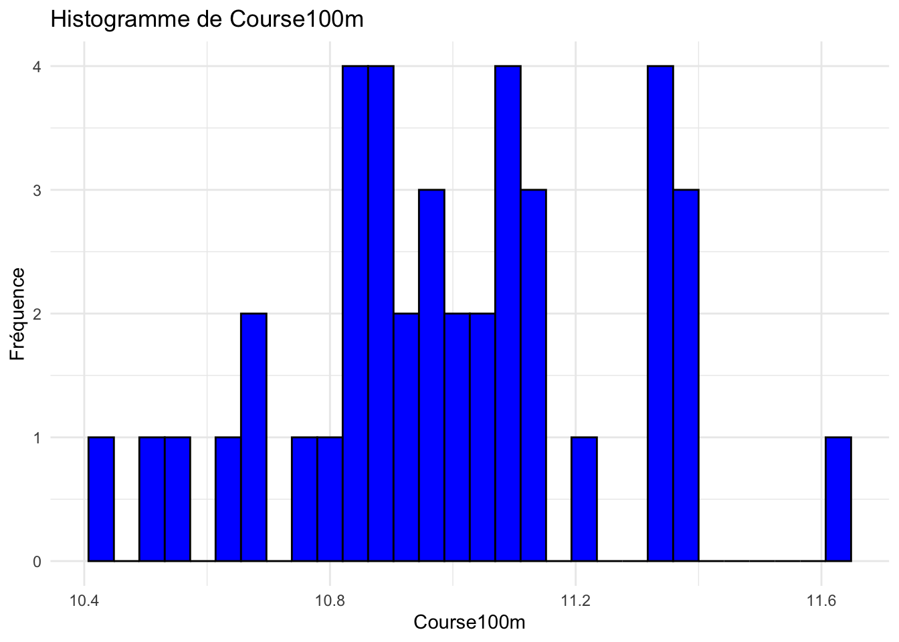
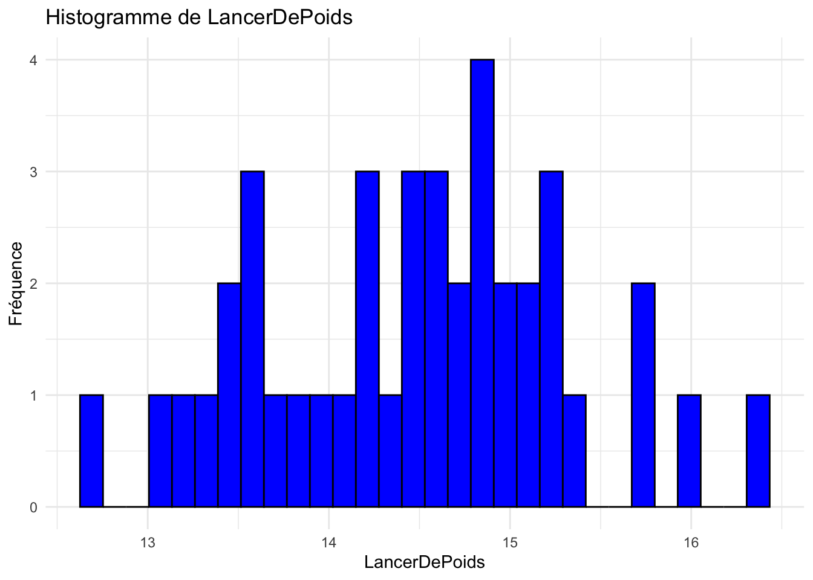
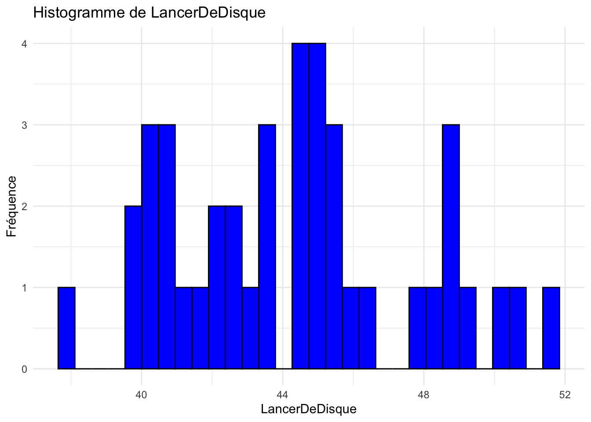
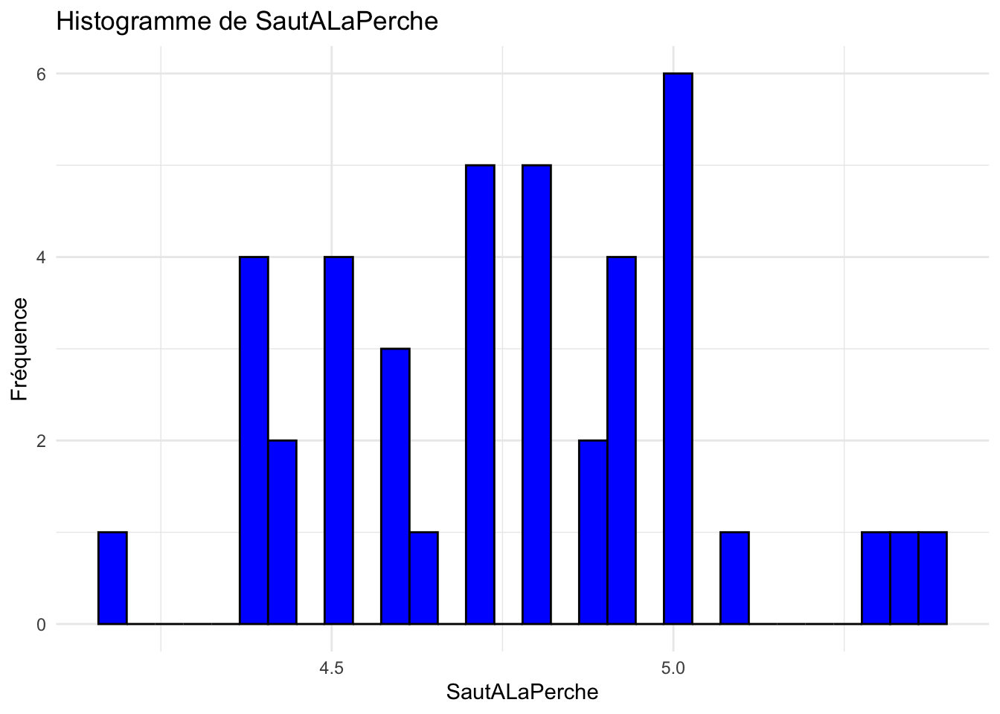
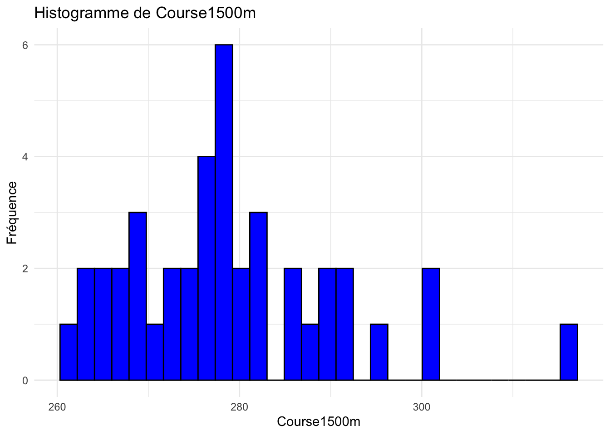
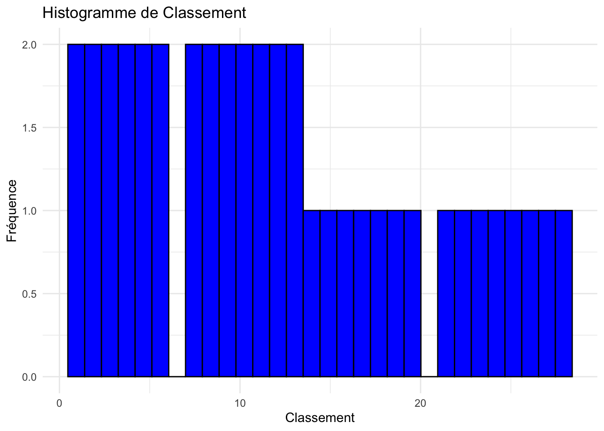
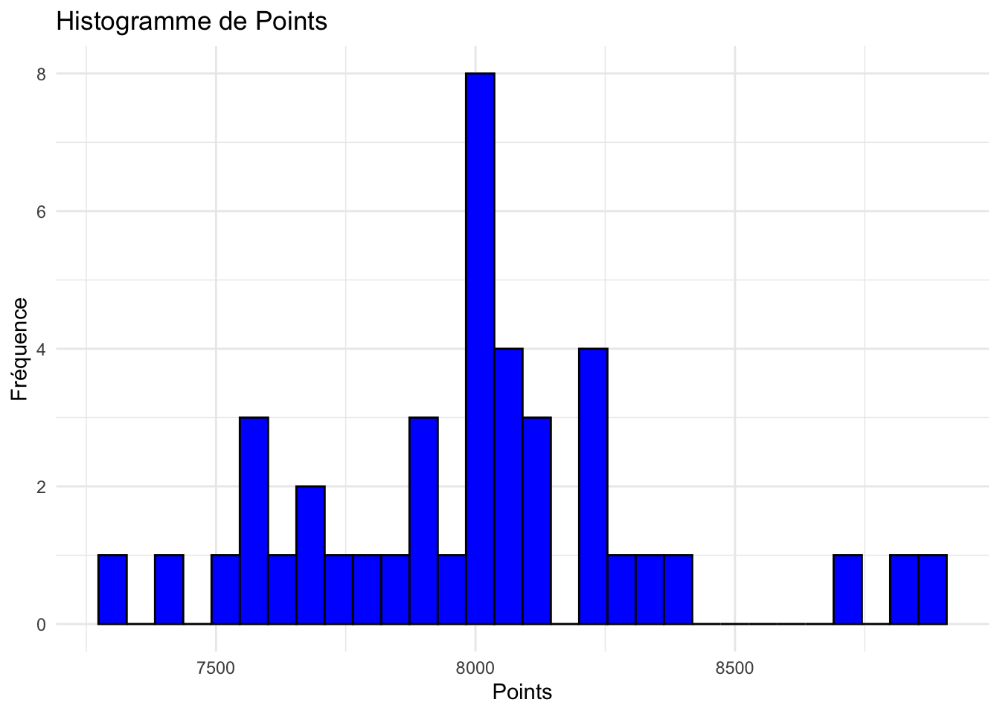
# Créer un boxplot pour chaque variable quantitativefor (var innames(decathlon_data)[vars_quantitatives]) {print(ggplot(decathlon_data, aes_string(x =factor(1), y = var)) +geom_boxplot(fill ="skyblue", color ="darkblue") +theme_minimal() +labs(title =paste("Boxplot de", var), x ="", y = var))}
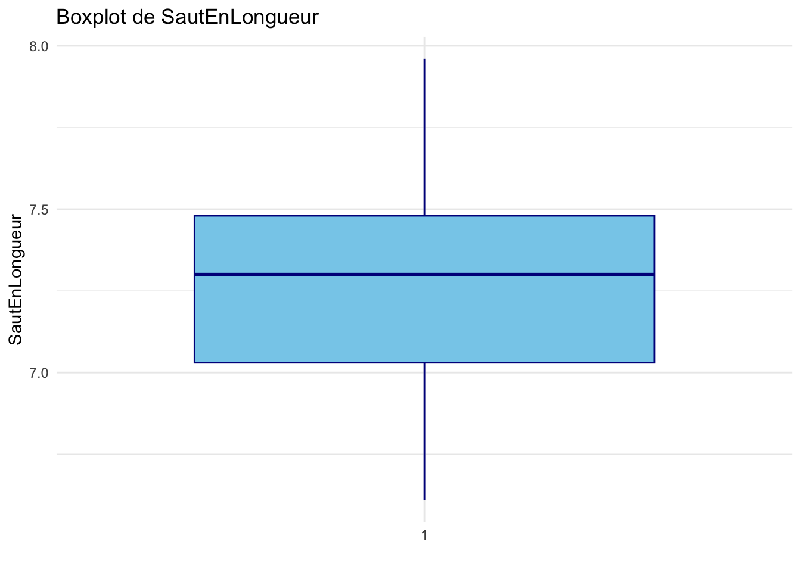
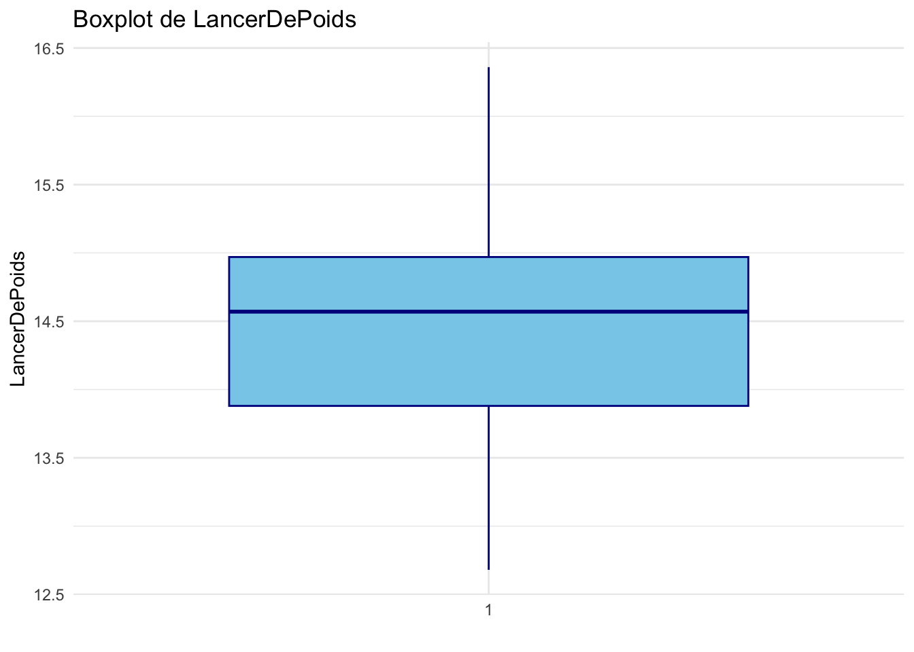
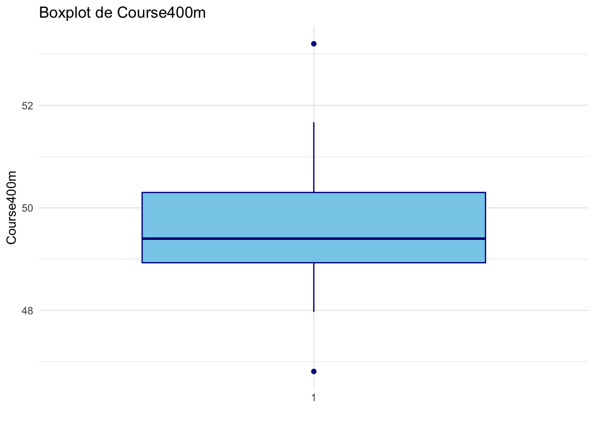
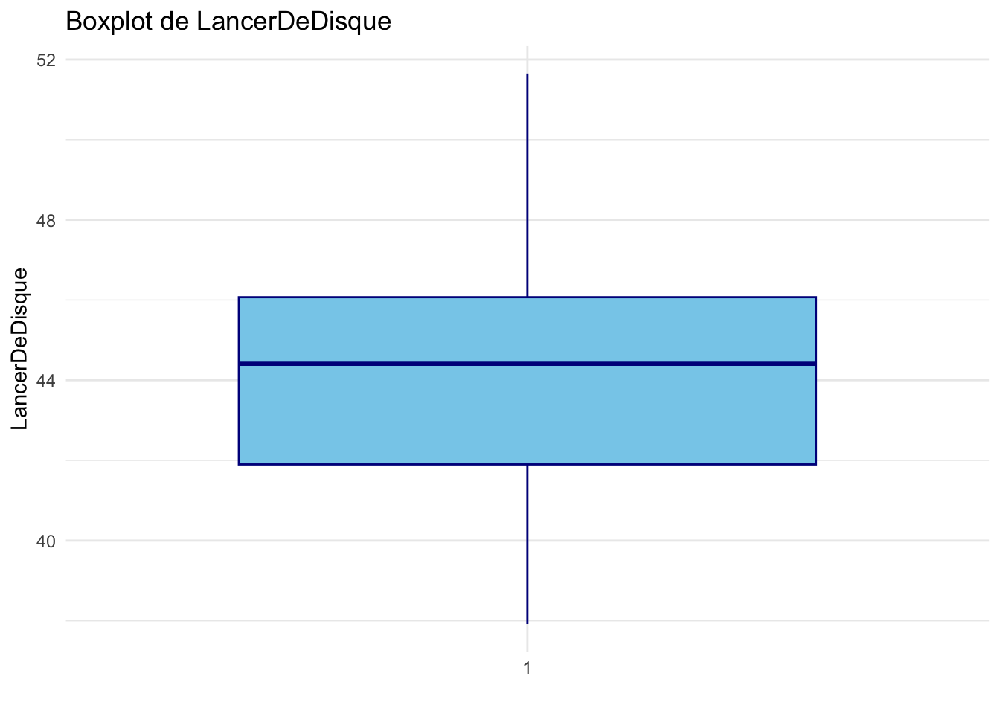
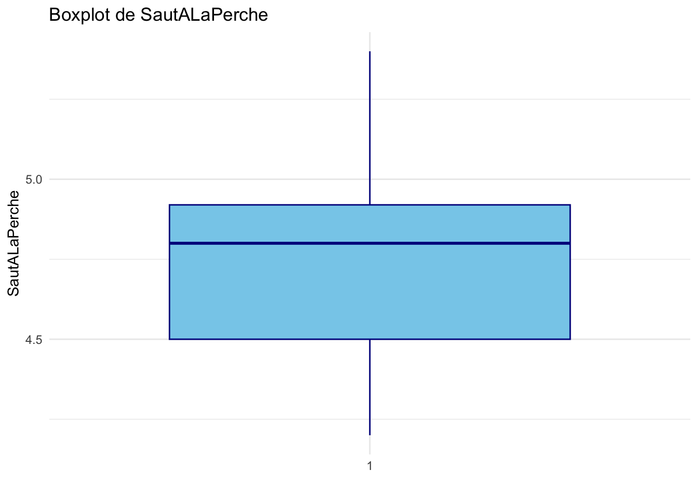
# Fonction pour créer un barplot en proportionscreer_barplot_proportion <-function(data, column_name) {# Calculer les proportions proportions <- data %>%count(.data[[column_name]]) %>%mutate(Proportion = n /sum(n))# Créer le barplotggplot(proportions, aes_string(x = column_name, y ="Proportion", fill = column_name)) +geom_bar(stat ="identity") +scale_y_continuous(labels = scales::percent_format()) +labs(x = column_name, y ="Proportion (%)") +theme_minimal()}# Créer un barplot pour la variable "Compétition"creer_barplot_proportion(decathlon_data, "Compétition")
Etape 2: Analyser les corrélations entre les variables quantitatives
# Installer les packages si nécessaireif (!require(ggplot2)) install.packages("ggplot2")if (!require(corrplot)) install.packages("corrplot")
Loading required package: corrplot
corrplot 0.92 loaded
# Charger les packageslibrary(ggplot2)library(corrplot)donnees_quantitatives <- decathlon_data[, vars_quantitatives]# Calculer la matrice de corrélationmatrice_correlation <-cor(donnees_quantitatives, use ="complete.obs")# Créer la heatmap de corrélation avec des coefficients plus visiblescorrplot(matrice_correlation, method ="color", type ="upper", order ="hclust",tl.col ="black", tl.srt =45, addCoef.col ="black", # Couleur des coefficientscl.pos ="n", # Position de la légende de couleurcl.cex =1.2, # Taille de la légende de couleuraddCoefasPercent =TRUE, # Afficher les coefficients en pourcentagenumber.cex =0.8) # Taille des chiffres des coefficients
Etape 3: Centrer et réduire les données
# Centrer et réduire les donnéesdonnees_centrees_reduites <-scale(donnees_quantitatives,center =TRUE,scale=TRUE)?scale
Etape 4: Réalisation de l’ACP avec Factominer
# Installer les packages si nécessaireif (!require("FactoMineR")) install.packages("FactoMineR")
Loading required package: FactoMineR
if (!require("devtools")) install.packages("devtools")
Skipping install of 'factoextra' from a github remote, the SHA1 (1689fc74) has not changed since last install.
Use `force = TRUE` to force installation
# Charger les packageslibrary(FactoMineR)library("factoextra")
Welcome! Want to learn more? See two factoextra-related books at https://goo.gl/ve3WBa
# Réaliser l'ACPresultat_acp <-PCA(donnees_centrees_reduites, graph =FALSE)# Afficher les résultats de l'ACPprint(resultat_acp)
**Results for the Principal Component Analysis (PCA)**
The analysis was performed on 41 individuals, described by 12 variables
*The results are available in the following objects:
name description
1 "$eig" "eigenvalues"
2 "$var" "results for the variables"
3 "$var$coord" "coord. for the variables"
4 "$var$cor" "correlations variables - dimensions"
5 "$var$cos2" "cos2 for the variables"
6 "$var$contrib" "contributions of the variables"
7 "$ind" "results for the individuals"
8 "$ind$coord" "coord. for the individuals"
9 "$ind$cos2" "cos2 for the individuals"
10 "$ind$contrib" "contributions of the individuals"
11 "$call" "summary statistics"
12 "$call$centre" "mean of the variables"
13 "$call$ecart.type" "standard error of the variables"
14 "$call$row.w" "weights for the individuals"
15 "$call$col.w" "weights for the variables"
barplot(valeurspropres[, 2], names.arg=1:nrow(valeurspropres), main ="Pourcentage de la variance expliquée par chaque composante",xlab ="Composantes principales",ylab ="Pourcentage de variance expliquée",col ="steelblue")# Add connected line segments to the plotlines(x =1:nrow(valeurspropres), valeurspropres[, 2], type="b", pch=19, col ="red")
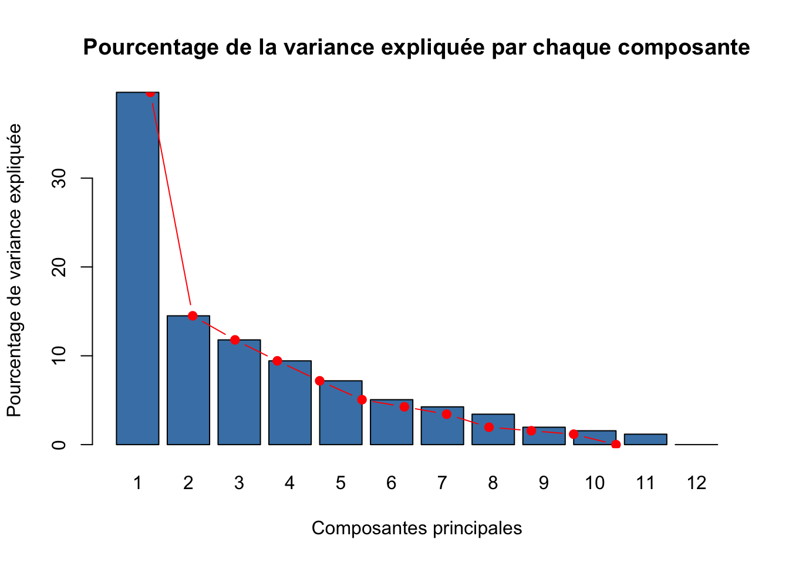
#Utilisation du package factoextra# Créer le graphique des valeurs propresfviz_eig(resultat_acp, addlabels =TRUE)
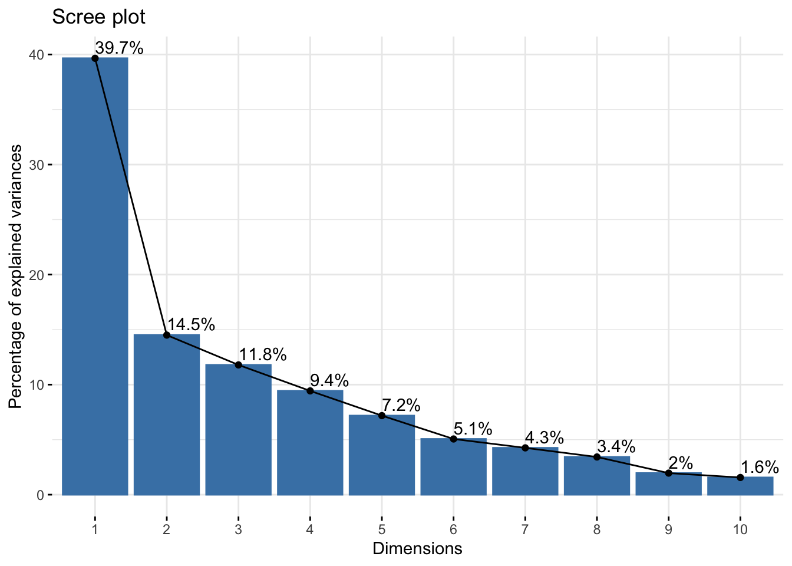
Représentation du cercle de corrélation
# Créer le graphique du cercle de corrélationfviz_pca_var(resultat_acp, col.var ="cos2", # Utiliser la qualité de représentation (cos2) pour la couleurgradient.cols =c("#00AFBB", "#E7B800", "#FC4E07"), # Palette de couleursrepel =TRUE, # Éviter le chevauchement des étiquettestitle ="Cercle de Corrélation des Variables")
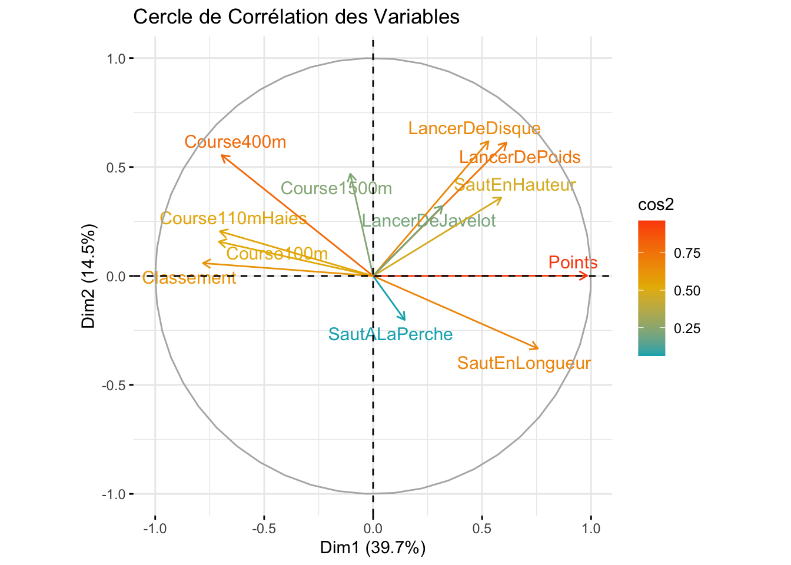
# Créer le graphique du cercle de corrélation# Créer le graphique du cercle de corrélationfviz_pca_var(resultat_acp, col.var ="contrib", # Utiliser la contributiongradient.cols =c("#00AFBB", "#E7B800", "#FC4E07"), # Palette de couleursrepel =TRUE, # Éviter le chevauchement des étiquettestitle ="Cercle de Corrélation des Variables")
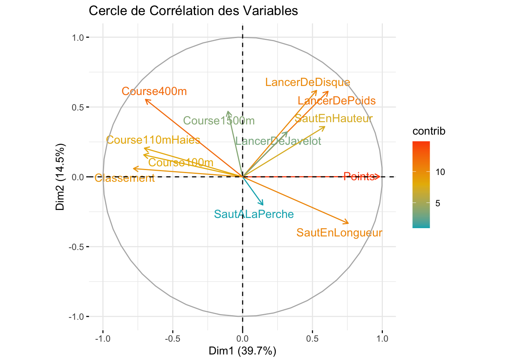
# Coordonnées des individushead(resultat_acp$ind$coord)
# Contributions of variables to PC1"fviz_contrib(resultat_acp, choice ="var", axes =1, top =3)
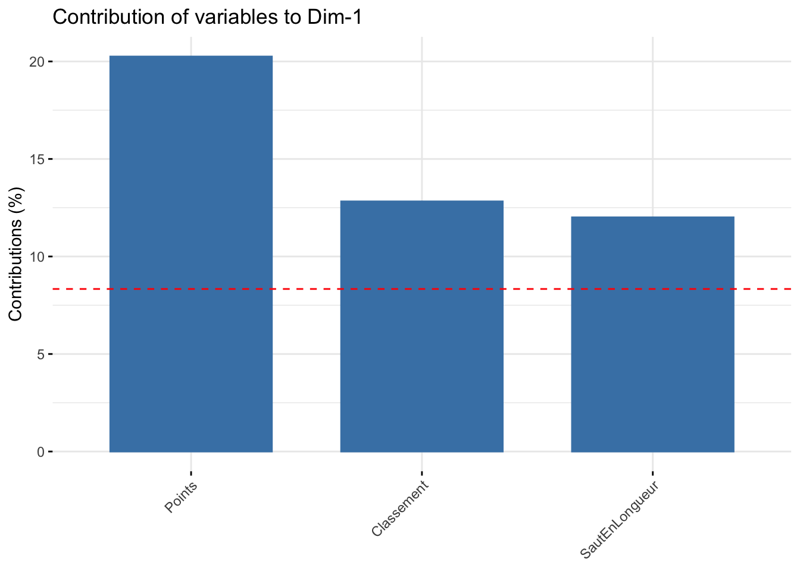
# Contributions of variables to PC2fviz_contrib(resultat_acp, choice ="var", axes =2, top =10)
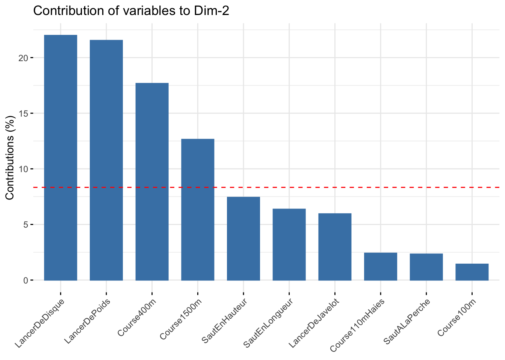
# Cosinus carré des variables sur la première composante principale (PC1)fviz_cos2(resultat_acp, choice ="var", axes =1, top =10) +ggtitle("Qualité de la représentation des variables sur la PC1 (cos²)")
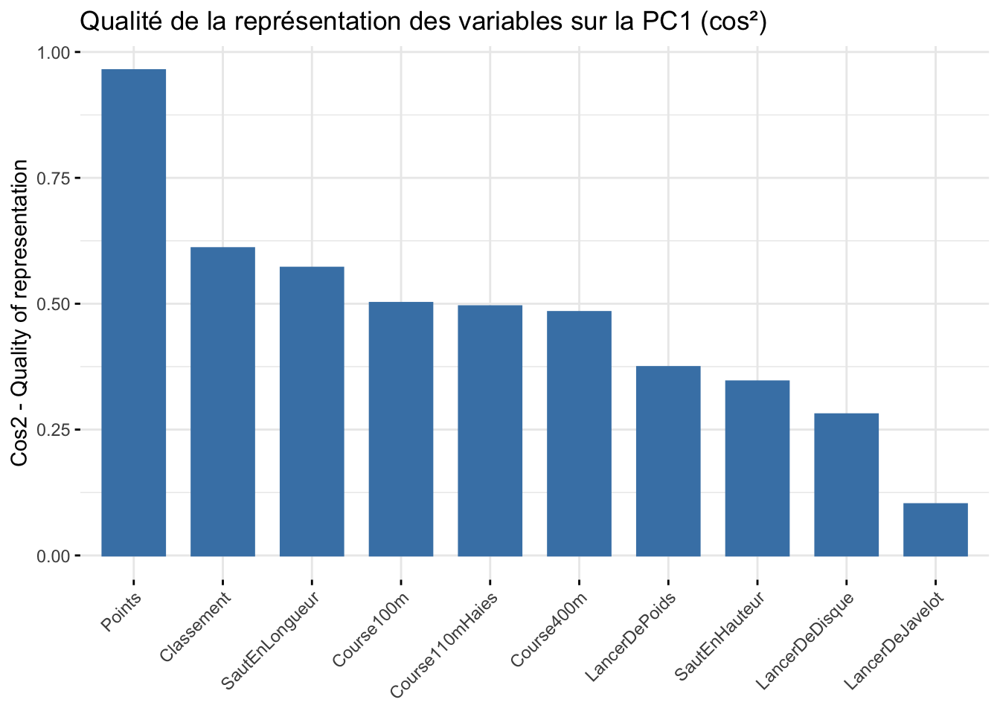
# Cosinus carré des variables sur la deuxième composante principale (PC2)fviz_cos2(resultat_acp, choice ="var", axes =2, top =10) +ggtitle("Qualité de la représentation des variables sur la PC2 (cos²)")
# Filtrer les individus avec cos² > 50%ind_cos2 <-apply(resultat_acp$ind$cos2, 1, max) >0.5# Filtrer les variables avec cos² > 50%var_cos2 <-apply(resultat_acp$var$cos2, 1, max) >0.5# Créer un graphique combiné des individus et des variablesfviz_pca_biplot(resultat_acp,select.ind =list(cos2 =0.5), # Sélectionner les individus avec cos² > 50%select.var =list(cos2 =0.5), # Sélectionner les variables avec cos² > 50%repel =TRUE, # Éviter le chevauchement des étiquettestitle ="Biplot des Individus et des Variables (cos² > 50%)",col.ind ="blue", # Couleur des individuscol.var ="red"# Couleur des variables )
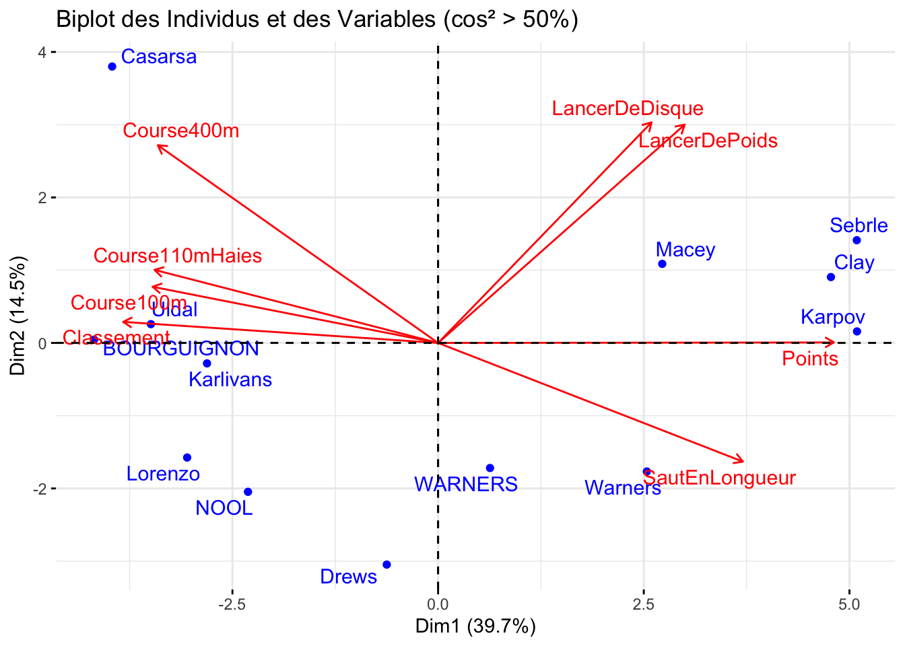
Ajout des variables supplémentaires
resultat_acp <-PCA(decathlon_data, quanti.sup =10,quali.sup =13, # Numéro de colonne de la variable qualitativegraph =TRUE)
Warning: ggrepel: 3 unlabeled data points (too many overlaps). Consider
increasing max.overlaps
# Création du graphiquefviz_pca_ind(resultat_acp, habillage =13, # Utiliser la 13ème colonne pour le coloriageaddEllipses =TRUE, ellipse.level =0.68) +scale_color_brewer(palette ="Dark2") +# Palette de couleurstheme_minimal() +# Thème minimalisteggtitle("ACP avec R") # Ajouter un titre (assurez-vous que le titre n'est pas NA/NaN)
res.desc <-dimdesc(resultat_acp, axes =c(4,5), proba =0.05)# Description of dimension 1res.desc
$Dim.4
Link between the variable and the continuous variables (R-square)
=================================================================================
correlation p.value
Course100m 0.3606946 2.051769e-02
Classement -0.3182313 4.258959e-02
LancerDeJavelot -0.6541163 3.515093e-06
Link between the variable and the categorical variable (1-way anova)
=============================================
R2 p.value
Compétition 0.2820765 0.0003533077
Link between variable and the categories of the categorical variables
================================================================
Estimate p.value
Compétition=Decastar 0.5408982 0.0003533077
Compétition=OlympicG -0.5408982 0.0003533077
$Dim.5
Link between the variable and the continuous variables (R-square)
=================================================================================
correlation p.value
Course1500m 0.4492733 0.003212199
LancerDeDisque 0.3210000 0.040722336
Course100m -0.3163774 0.043878419
SautEnHauteur -0.4464054 0.003438064
Link between the variable and the categorical variable (1-way anova)
=============================================
R2 p.value
Compétition 0.1708189 0.007234681
Link between variable and the categories of the categorical variables
================================================================
Estimate p.value
Compétition=OlympicG 0.3870537 0.007234681
Compétition=Decastar -0.3870537 0.007234681
Quiz
Quelle action réaliser en premier parmi les 3 actions suivantes pour mettre en place une ACP?
A) Normaliser les données pour avoir une moyenne de zéro et une variance de un.
B) Calculer la matrice de covariance des données.
C) Sélectionner les composantes principales qui expliquent le plus de variance.
Comment l’introduction de variables supplémentaires est-elle gérée dans l’ACP ?
A) Les variables supplémentaires sont intégrées dans le calcul des composantes principales pour modifier la structure de variance.
B) Les variables supplémentaires sont utilisées pour interpréter les composantes principales mais ne sont pas intégrées dans le calcul des axes principaux.
C) Les variables supplémentaires remplacent les variables initiales si elles expliquent une plus grande part de la variance.